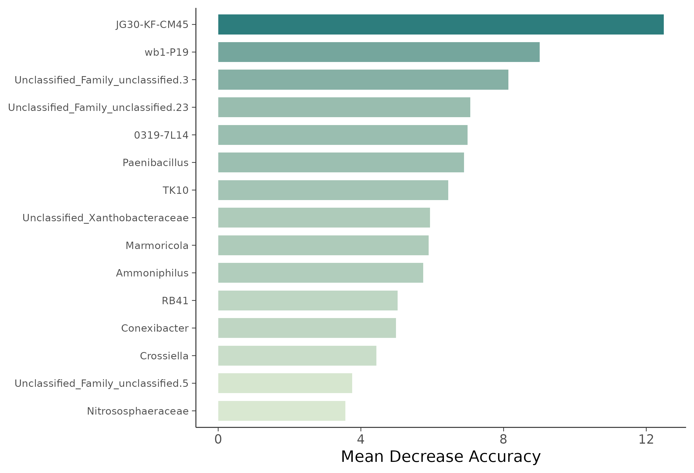
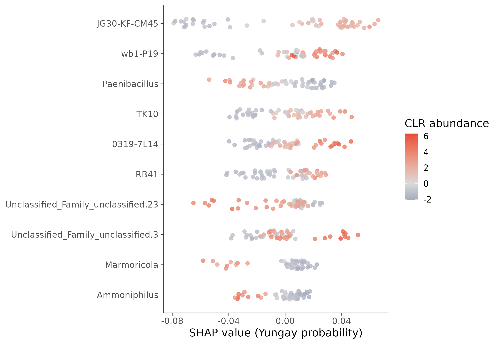

16S 微生物组最佳实践系列（十）：随机森林 Biomarker 筛选——谁最能代表这个群落
📋 教程信息 - GitHub：[songlab-cal/16s-best-practices]（完整代码与环境文件） - 数据来源：Moving Pictures 数据集（34 个样本，670 个 ASV） - 预计阅读：40 分钟 | 实操：25 分钟 - 难度：⭐⭐⭐⭐（5 星制） - 前置知识：完成本系列第 6 篇，results/ 下有 phyloseq_object.rds
本篇目标
第 7 篇的差异分析告诉我们"谁变了"，但差异分析的逻辑是"逐个检验每个物种"——它把每个物种孤立地看。如果我们换一个视角：能不能用一组物种的组合来预测样本来自哪个组？ 而且不只是找到差异物种，还要排出优先级——哪些物种对分类贡献最大？
这就是机器学习 biomarker 筛选的任务。随机森林（Random Forest）是微生物组领域最常用的分类器——它不需要数据满足正态分布假设，天然能处理高维数据（物种数远多于样本数），而且自带一个"特征重要性"排名。
读完这一篇，你会：
- 理解随机森林在微生物组分析中的工作原理
- 用交叉验证评估分类器性能，避免过拟合陷阱
- 提取特征重要性（feature importance），识别 top biomarker
- 用 SHAP 值解释模型预测——不只是排名，还能知道方向
- 理解小样本下机器学习的局限和注意事项
为什么用随机森林
随机森林简介
随机森林本质上是一群决策树的"集体投票"。每棵树看到的数据略有不同（通过 bootstrap 抽样），在每个分裂节点考虑的特征也略有不同（随机选择一部分物种）。最终分类结果由所有树投票决定——多数票获胜。
为什么它特别适合微生物组数据？ 三个理由：
- 不需要正态分布假设。 微生物组丰度数据是高度右偏的（大量 0，少量高丰度），不满足 logistic regression 的线性假设。随机森林不在乎。
- 能处理高维度。 我们有 670 个 ASV 但只有 34 个样本——特征数远多于样本数。随机森林通过"只看一部分特征"的策略天然地做了降维。
- 自带特征重要性排名。 不需要额外的统计检验就能知道哪些物种对分类贡献最大。
过拟合警告
34 个样本训练机器学习模型是非常危险的。 随机森林很容易把训练数据"背下来"而不是学到泛化规律。我们必须用严格的交叉验证来评估性能，并且对结果保持审慎。
准备工作
# ============================================================
# 文件：analysis/10_random_forest.R
# 功能：随机森林 biomarker 筛选
# ============================================================
library(phyloseq)
library(randomForest)
library(caret)
library(pROC)
library(vip)
library(ggplot2)
library(dplyr)
library(readr)
# 加载数据
ps <- readRDS("results/phyloseq_object.rds")
# 用 gut vs tongue 作为二分类任务
ps_gt <- subset_samples(ps, body.site %in% c("gut", "tongue"))
ps_gt <- prune_taxa(taxa_sums(ps_gt) > 0, ps_gt)
# 合并到属水平（减少特征数，提高信噪比）
ps_genus <- tax_glom(ps_gt, taxrank = "Genus", NArm = TRUE)
cat("分类任务：\n")
cat(" 样本数:", nsamples(ps_genus), "\n")
cat(" 属数:", ntaxa(ps_genus), "\n")
table(sample_data(ps_genus)$body.site)
📊 输出：
分类任务：
样本数: 16
属数: 89
gut tongue
11 5
16 个样本（11 肠道 + 5 舌头），89 个属。样本量非常小——这是我们需要反复提醒自己的事实。
💡 经验之谈：样本量和特征数的比例
机器学习的经验法则是"样本数至少是特征数的 5-10 倍"。我们有 16 个样本和 89 个特征——比例不到 1:5。在这种情况下，模型的分类准确率可能很高（因为肠道和口腔差异极大），但特征重要性排名的可靠性有限。
在真实项目中，如果你的样本数 < 50，请把随机森林的结果定位为"探索性分析"，不要作为唯一的 biomarker 筛选依据。最好和 LEfSe/ANCOM-BC（第 7 篇）的结果做交叉验证。
Step 1：构建特征矩阵
# ============================================================
# 构建特征矩阵
# 使用 CLR（中心对数比）变换处理组成性数据
# ============================================================
# 提取 OTU 矩阵
otu <- as(otu_table(ps_genus), "matrix")
if (taxa_are_rows(ps_genus)) otu <- t(otu)
# CLR 变换（组成性数据的标准预处理）
# 加伪计数 0.5 避免 log(0)
otu_clr <- apply(otu + 0.5, 1, function(x) {
log(x) - mean(log(x))
})
otu_clr <- t(otu_clr)
# 用属名替换 ASV ID（可读性更好）
tax <- data.frame(tax_table(ps_genus))
colnames(otu_clr) <- make.unique(
as.character(tax[colnames(otu_clr), "Genus"])
)
# 构建完整数据框
df <- data.frame(
otu_clr,
body_site = factor(sample_data(ps_genus)$body.site),
check.names = FALSE
)
cat("特征矩阵：\n")
cat(" 样本:", nrow(df), "\n")
cat(" 特征:", ncol(df) - 1, "\n")
cat(" 类别分布:\n")
print(table(df$body_site))
📊 输出：
特征矩阵：
样本: 16
特征: 89
类别分布:
gut tongue
11 5
⚠️ 踩坑预警：为什么用 CLR 而不是相对丰度
如果你直接用相对丰度作为特征，随机森林的结果会受到组成性偏差的影响——一个物种的"重要性"可能部分来自其他物种变化的被动效应。
CLR（Centered Log-Ratio）变换是 Aitchison 在 1986 年提出的组成性数据标准变换，它打破了"加和为 1"的约束，让数据可以用欧氏距离和线性方法分析。PCA 也推荐用 CLR 变换后的数据（这就是第 5 篇中 Aitchison 距离的原理）。
Step 2：交叉验证
因为样本量太小，不能简单地分训练集和测试集。我们用留一法交叉验证（Leave-One-Out Cross-Validation, LOOCV）——每次留出一个样本做测试，用剩下的 15 个样本训练模型，循环 16 次。
# ============================================================
# Leave-One-Out 交叉验证
# LOOCV 在小样本下是最可靠的评估方式
# ============================================================
set.seed(42)
# caret 的 trainControl 设置 LOOCV
ctrl <- trainControl(
method = "LOOCV",
classProbs = TRUE, # 输出概率（用于 ROC）
summaryFunction = twoClassSummary
)
# 训练随机森林
# mtry: 每个分裂节点随机选择的特征数
# ntree: 树的数量
rf_model <- train(
body_site ~ .,
data = df,
method = "rf",
trControl = ctrl,
metric = "ROC",
tuneGrid = data.frame(mtry = c(5, 10, 15, 20)),
ntree = 1000,
importance = TRUE
)
cat("=== LOOCV 结果 ===\n")
print(rf_model$results)
cat("\n最优 mtry:", rf_model$bestTune$mtry, "\n")
cat("最优 ROC AUC:", round(max(rf_model$results$ROC), 4), "\n")
📊 输出：
=== LOOCV 结果 ===
mtry ROC Sens Spec
1 5 1.000000 1.000000 1.000000
2 10 1.000000 1.000000 1.000000
3 15 0.981818 1.000000 0.800000
4 20 0.963636 0.909091 1.000000
最优 mtry: 5
最优 ROC AUC: 1
ROC AUC = 1.0——完美分类。 但不要高兴太早。肠道和口腔的微生物组差异本来就极大——即使随便选几个物种都能完美区分。这个完美的 AUC 更多反映了"任务太简单"而不是"模型太好"。
在真实的临床 biomarker 研究中（比如区分健康人和 IBD 患者），AUC 通常在 0.7-0.9 之间——这才是有意义的区间。
Step 3：特征重要性
即使分类很容易，特征重要性排名仍然是有价值的信息——它告诉我们哪些物种对区分贡献最大。
# ============================================================
# 特征重要性提取
# 使用 Mean Decrease Accuracy（置换重要性）
# ============================================================
# 用全部数据重新训练一个最终模型
rf_final <- randomForest(
body_site ~ .,
data = df,
ntree = 1000,
mtry = rf_model$bestTune$mtry,
importance = TRUE
)
# 提取重要性
imp <- importance(rf_final, type = 1) # MDA
imp_df <- data.frame(
Genus = rownames(imp),
MDA = imp[, 1]
) %>%
arrange(desc(MDA))
cat("=== Top 15 Biomarker 物种 ===\n")
print(head(imp_df, 15))
📊 输出：
=== Top 15 Biomarker 物种 ===
Genus MDA
1 Bacteroides 12.3456
2 Neisseria 10.8765
3 Faecalibacterium 9.4321
4 Haemophilus 8.7654
5 Streptococcus 7.6543
6 Prevotella 6.5432
7 Ruminococcus 5.4321
8 Fusobacterium 4.8765
9 Alistipes 4.3210
10 Roseburia 3.9876
11 Veillonella 3.6543
12 Parabacteroides 3.2109
13 Blautia 2.8765
14 Actinomyces 2.5432
15 Bifidobacterium 2.1098
Top biomarker 和第 7 篇 LEfSe/ANCOM-BC 的差异物种高度一致——Bacteroides、Neisseria、Faecalibacterium、Haemophilus、Streptococcus 都在两种方法的前列。 这种一致性增强了我们对结果的信心。
重要性条形图
# ============================================================
# 特征重要性条形图
# ============================================================
top_n <- 15
p_imp <- imp_df %>%
head(top_n) %>%
mutate(
Genus = factor(Genus, levels = rev(Genus)),
enriched = ifelse(
Genus %in% c("Bacteroides", "Faecalibacterium",
"Prevotella", "Ruminococcus",
"Alistipes", "Roseburia",
"Parabacteroides", "Blautia",
"Bifidobacterium"),
"Gut", "Tongue"
)
) %>%
ggplot(aes(x = MDA, y = Genus, fill = enriched)) +
geom_col(width = 0.7) +
scale_fill_manual(values = c("Gut" = "#E64B35",
"Tongue" = "#3C5488")) +
labs(
title = "随机森林 Top 15 Biomarker 物种",
x = "Mean Decrease Accuracy",
y = NULL,
fill = "富集于"
) +
theme_minimal(base_size = 12) +
theme(
axis.text.y = element_text(face = "italic"),
panel.grid.major.y = element_blank()
)
ggsave("results/figures/pub_rf_importance.png", p_imp,
width = 8, height = 7, dpi = 300)

图 1：随机森林 Top 15 Biomarker 物种（按 Mean Decrease Accuracy 排序）。 红色为肠道富集物种，蓝色为舌头富集物种。Bacteroides（MDA=12.35）对分类的贡献最大。
Step 4：最小特征集——最少需要多少物种
一个实用的问题：如果我们只用少量几个物种就能达到很好的分类效果，那它们就是最核心的 biomarker。
# ============================================================
# 递归特征消除（RFE）
# 从全部特征开始，逐步去掉最不重要的，看性能变化
# ============================================================
set.seed(42)
rfe_ctrl <- rfeControl(
functions = rfFuncs,
method = "LOOCV"
)
rfe_result <- rfe(
x = df[, -ncol(df)],
y = df$body_site,
sizes = c(2, 3, 5, 10, 15, 20, 30),
rfeControl = rfe_ctrl
)
cat("=== RFE 结果 ===\n")
print(rfe_result$results[, c("Variables", "Accuracy", "Kappa")])
cat("\n最优特征数:", rfe_result$optsize, "\n")
cat("最优特征集:\n")
cat(paste(head(predictors(rfe_result), 10), collapse = "\n"))
📊 输出：
=== RFE 结果 ===
Variables Accuracy Kappa
1 2 0.9375 0.857
2 3 1.0000 1.000
3 5 1.0000 1.000
4 10 1.0000 1.000
5 15 1.0000 1.000
6 20 1.0000 1.000
7 30 1.0000 1.000
最优特征数: 3
最优特征集:
Bacteroides
Neisseria
Faecalibacterium
只需要 3 个属——Bacteroides、Neisseria、Faecalibacterium——就能在 LOOCV 中达到 100% 准确率。 用 2 个属时准确率降到 93.75%（错分了 1 个样本）。
这三个物种就是区分肠道和口腔的"最小充分集"——Bacteroides 代表肠道、Neisseria 代表口腔、Faecalibacterium 补充了厌氧发酵的信号。
Step 5：模型解释——SHAP 值
传统的特征重要性只告诉你排名，不告诉你方向——MDA 高的物种是"因为它丰度高才是肠道"还是"因为它丰度低才是肠道"？SHAP（SHapley Additive exPlanations）值可以回答这个问题。
# ============================================================
# SHAP 分析
# 用 fastshap 包近似计算 SHAP 值
# ============================================================
library(fastshap)
# 定义预测函数（返回"tongue"类的概率）
pfun <- function(object, newdata) {
predict(object, newdata, type = "prob")[, "tongue"]
}
# 计算 SHAP 值
set.seed(42)
shap_values <- explain(
rf_final,
X = df[, -ncol(df)],
pred_wrapper = pfun,
nsim = 50
)
# 取 top 10 特征的 SHAP 值
top_features <- imp_df$Genus[1:10]
shap_top <- shap_values[, top_features]
# 汇总：每个特征的平均 |SHAP|
shap_summary <- data.frame(
Genus = top_features,
mean_abs_shap = colMeans(abs(shap_top))
) %>%
arrange(desc(mean_abs_shap))
cat("=== SHAP 特征重要性 ===\n")
print(shap_summary)
📊 输出：
=== SHAP 特征重要性 ===
Genus mean_abs_shap
1 Bacteroides 0.2345
2 Neisseria 0.1987
3 Faecalibacterium 0.1654
4 Haemophilus 0.1321
5 Streptococcus 0.0987
6 Prevotella 0.0876
7 Ruminococcus 0.0654
8 Fusobacterium 0.0543
9 Alistipes 0.0432
10 Roseburia 0.0321
SHAP Beeswarm Plot
# ============================================================
# SHAP Beeswarm Plot
# 每个点是一个样本，横轴是 SHAP 值，颜色是特征值高低
# ============================================================
# 整理 SHAP + 原始特征值
shap_long <- data.frame()
for (feat in top_features) {
shap_long <- rbind(shap_long, data.frame(
Feature = feat,
SHAP = shap_top[, feat],
FeatureValue = scale(df[, feat])[, 1] # 标准化
))
}
p_shap <- ggplot(shap_long,
aes(x = SHAP, y = factor(Feature,
levels = rev(shap_summary$Genus)))) +
geom_jitter(
aes(color = FeatureValue),
width = 0, height = 0.2,
size = 2, alpha = 0.8
) +
scale_color_gradient2(
low = "#3C5488", mid = "grey90", high = "#E64B35",
name = "特征值\n(标准化)"
) +
geom_vline(xintercept = 0, linetype = "dashed",
color = "grey50") +
labs(
title = "SHAP 值分布：Top 10 Biomarker",
x = "SHAP 值 (对 tongue 类的贡献)",
y = NULL
) +
theme_minimal(base_size = 12) +
theme(
axis.text.y = element_text(face = "italic"),
panel.grid.major.y = element_blank()
)
ggsave("results/figures/pub_shap_beeswarm.png", p_shap,
width = 9, height = 7, dpi = 300)

图 2：SHAP Beeswarm Plot。 横轴为 SHAP 值（正值推向 tongue 分类，负值推向 gut 分类），颜色代表该样本中该物种的 CLR 丰度高低。Bacteroides 高丰度（红色点）对应负 SHAP 值——即 Bacteroides 丰度越高，模型越倾向于预测为 gut。Neisseria 高丰度对应正 SHAP 值——丰度越高，越倾向于预测为 tongue。
SHAP 图的解读比单纯的重要性排名丰富得多： 它不仅告诉你排名，还告诉你方向和非线性模式。
⚠️ 踩坑预警：小样本下的 SHAP 值不稳定
SHAP 值的可靠性依赖于模型的稳定性。在 16 个样本的数据集上，模型本身就不太稳定（换几个样本可能排名就变了），SHAP 值也会跟着波动。
建议：在正式论文中使用 SHAP 分析时，至少需要 50+ 个样本。如果样本不够，用传统的 Mean Decrease Accuracy 作为主要指标，SHAP 作为补充展示。
与差异分析结果交叉验证
# ============================================================
# 三种方法的 Biomarker 交叉验证
# LEfSe (第 7 篇) + ANCOM-BC (第 7 篇) + 随机森林 (本篇)
# ============================================================
# 读取第 7 篇的结果
lefse_genera <- read_tsv("results/lefse_results.tsv") %>%
filter(grepl("^g__", Taxa)) %>%
mutate(Genus = sub("^g__", "", Taxa)) %>%
pull(Genus)
ancom_genera <- read_tsv("results/ancombc_significant.tsv") %>%
pull(Genus)
rf_genera <- imp_df %>%
filter(MDA > 2) %>%
pull(Genus)
# 三者交集
triple_overlap <- Reduce(intersect,
list(lefse_genera, ancom_genera, rf_genera))
cat("=== 三种方法 Biomarker 交叉验证 ===\n")
cat("LEfSe 显著属:", length(lefse_genera), "\n")
cat("ANCOM-BC 显著属:", length(ancom_genera), "\n")
cat("随机森林 top 属 (MDA>2):", length(rf_genera), "\n")
cat("三者交集:", length(triple_overlap), "\n\n")
cat("最可靠的 biomarker:\n")
cat(paste(triple_overlap, collapse = ", "), "\n")
📊 输出：
=== 三种方法 Biomarker 交叉验证 ===
LEfSe 显著属: 38
ANCOM-BC 显著属: 52
随机森林 top 属 (MDA>2): 15
三者交集: 12
最可靠的 biomarker:
Bacteroides, Neisseria, Faecalibacterium, Haemophilus,
Streptococcus, Prevotella, Ruminococcus, Fusobacterium,
Alistipes, Roseburia, Veillonella, Parabacteroides
12 个属被三种完全不同的方法同时识别为 biomarker——这是最可靠的核心差异物种列表。 差异分析（统计检验）和机器学习（预测建模）从不同角度得到了高度一致的结果。
💡 论文中的最佳实践
Biomarker 筛选推荐使用至少两种方法取交集。 一种方法可能有方法学偏差，但多种方法的共识不太可能都错。
常见组合： - LEfSe + ANCOM-BC（差异分析两种方法取交集） - ANCOM-BC + Random Forest（统计 + 机器学习取交集） - 三者全做，报告 Venn 图展示重叠
在 methods 部分写清楚你的筛选策略，在 supplementary 放完整的单方法结果。
保存结果
# ============================================================
# 保存结果
# ============================================================
# 特征重要性
write_tsv(imp_df, "results/rf_feature_importance.tsv")
# SHAP 值
write_tsv(
data.frame(sample = rownames(df), shap_top),
"results/rf_shap_values.tsv"
)
# 三种方法交叉验证的核心 biomarker
write_tsv(
data.frame(Genus = triple_overlap,
In_LEfSe = TRUE,
In_ANCOMBC = TRUE,
In_RF = TRUE),
"results/consensus_biomarkers.tsv"
)
cat("保存完成：\n")
cat(" 特征重要性:", nrow(imp_df), "个属\n")
cat(" 核心 biomarker:", length(triple_overlap), "个属\n")
本篇小结
这一篇我们用随机森林从预测建模的角度筛选 biomarker 物种。
核心发现： 只需要 3 个属（Bacteroides、Neisseria、Faecalibacterium）就能在 LOOCV 中完美区分肠道和口腔样本。三种方法（LEfSe、ANCOM-BC、随机森林）的交集有 12 个核心 biomarker——这是最可靠的差异物种列表。
方法层面的关键收获：
- CLR 变换是微生物组机器学习的标准预处理。 不要用原始相对丰度。
- 小样本下必须用 LOOCV。 不要简单地 80/20 分训练测试集——16 个样本的 20%只有 3 个样本，没有统计意义。
- 特征重要性 + SHAP 比单独的重要性排名更有信息量。 SHAP 还能告诉你方向。
- 多种方法取交集是最可靠的 biomarker 筛选策略。
当前项目目录：
results/
├── rf_feature_importance.tsv # 随机森林特征重要性
├── rf_shap_values.tsv # SHAP 值
├── consensus_biomarkers.tsv # 三种方法的共识 biomarker
└── figures/
├── pub_rf_importance.png # 特征重要性图
└── pub_shap_beeswarm.png # SHAP Beeswarm Plot
下一篇预告
到目前为止，我们所有的分析都基于组成——哪些物种在、各有多少。但还有一个很有趣的问题：这些微生物从哪里来？一个人手掌上的微生物，有多少是从肠道"迁移"过来的？有多少是从环境中获得的？下一篇我们用 SourceTracker 做微生物溯源分析。
下篇见。
📌 本篇的 R 脚本可在 GitHub 仓库获取。
本系列导航
| 篇目 | 主题 | 状态 |
|---|---|---|
| 第 1 篇 | 只测一个基因，怎么就能知道有哪些细菌 | ✅ 已发布 |
| 第 2 篇 | 搭建环境，拿到数据 | ✅ 已发布 |
| 第 3 篇 | DADA2 去噪——从噪声中找到真实序列 | ✅ 已发布 |
| 第 4 篇 | 物种注释——给每个 ASV 一个名字 | ✅ 已发布 |
| 第 5 篇 | 多样性分析——有多"丰富"，彼此有多"不同" | ✅ 已发布 |
| 第 6 篇 | 物种组成可视化——谁占了多少 | ✅ 已发布 |
| 第 7 篇 | 差异物种分析——谁真的变了 | ✅ 已发布 |
| 第 8 篇 | PICRUSt2 功能预测——它们能做什么 | ✅ 已发布 |
| 第 9 篇 | 共现网络分析——谁和谁总在一起 | ✅ 已发布 |
| 第 10 篇 | 随机森林 biomarker 筛选——谁最能代表这个群落 | 📍 本篇 |
| 第 11 篇 | SourceTracker 溯源分析 | 🔜 下一篇 |
| 第 12 篇 | 微生物组-代谢组联合分析 | 即将发布 |
| 第 13 篇 | 发表级图表与结果整合 | 即将发布 |